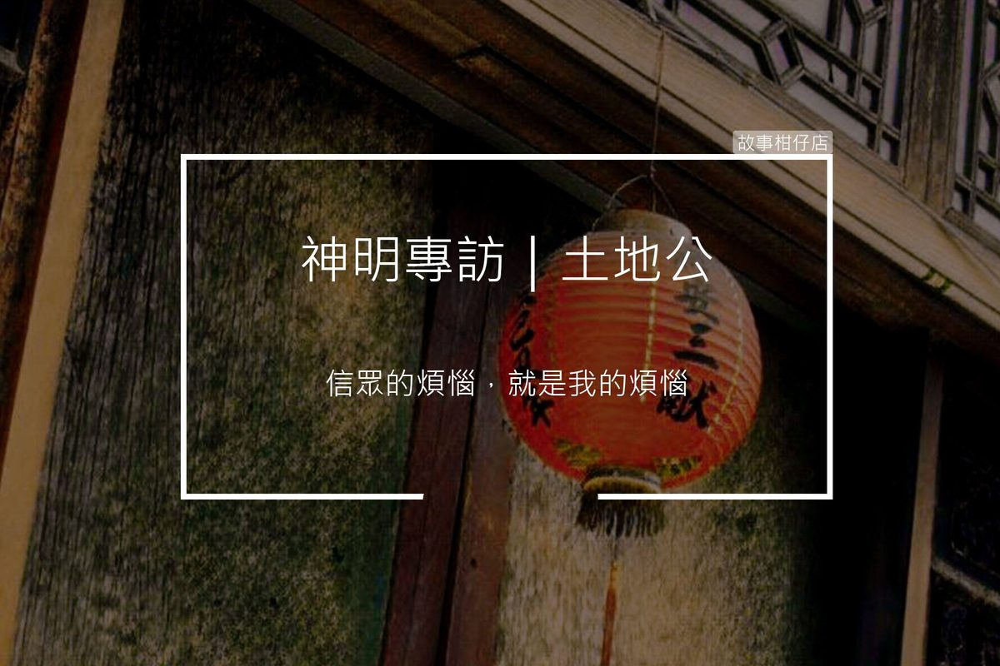

神明專訪/土地公
2018-06-29

採訪人物：土地公
採訪人：老闆娘
採訪時間：民國23年
採訪地點：內山/阿好村/土地公廟
故事回顧：
老闆娘：一直待在同個地方不無聊嗎？
土地公：
怎麼會，無聊也是好事啊，你沒聽過「沒消息就是好消息」，大家平平安安我尚歡喜。
而且，「墨非定律」你知吼，千萬不能說無聊，一說無聊，就有大條欸來。
我這有山、有溪、有田，作物生長的好，水鬼有節制，山精無害人，又有虎爺作伴，很滿足啊。
老闆娘：虎爺好相處嗎，祂看起來有點兇。
土地公：
免驚，他只是看起來有威嚴，但心肝軟，算好相處，但我們不時也是會吵架啦。
像初二那天，信眾供奉一籃雞蛋，被我拐杖不小心打破兩粒，阿虎真抓狂，說要剪我鬍鬚，接來就換我生氣。（土地捲袖）。
（虎爺外巡回來）。
啊，這小事不重要，問別項。
老闆娘：有遇過什麼煩惱的事情嗎？
土地公：
每天都在煩惱啊。
信眾的煩惱，就是我的煩惱，他們傷心，我不捨。
但其實很多事，都是註好好，我無法解決，只能聽而已。
老闆娘：聽說您扶養過一個小孩，她現在怎麼樣了。
土地公：
妳說阿卿吧。
（沉默）。
前一陣子過世，那天我跟著鬼差大人送她一段路。
看到她可以笑笑離開，也是欣慰。
希望她下輩子不要過得太艱苦。
老闆娘：你一直都在幫助別人，如果有人可以幫你，你會需要什麼幫忙？
土地公：
妳知影嗎，在同一個所在久啊，每家的個性我也是很清楚。
常常一家歡喜，一家就憂愁。
歡喜的人來求，憂愁的人也來求，我只好都賜笑杯。
神明對人不能太有感情，有感情就做不到「公平」。
但是做神怎麼可以不公平。
所以我真希望有人可以教我，對人、對物要如何不偏心。